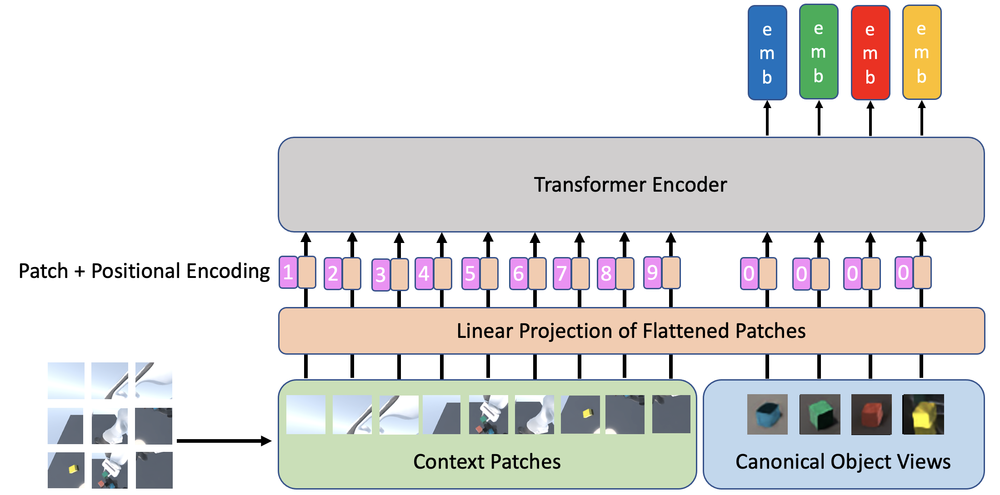
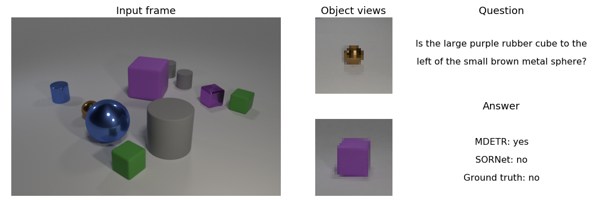
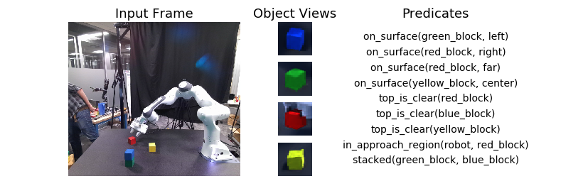
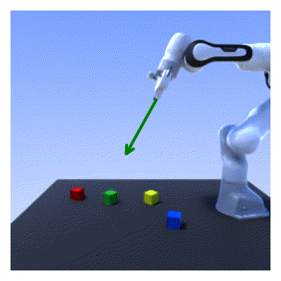
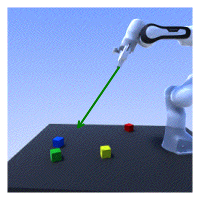
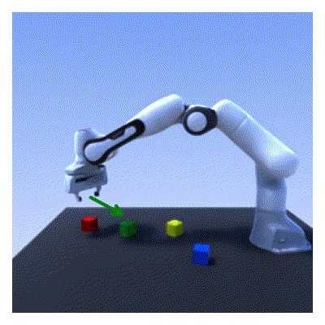

Abstract
Sequential manipulation tasks require a robot to perceive the state of an environment and plan a sequence of actions leading to a desired goal state, where the ability to reason about spatial relationships among object entities from raw sensor inputs is crucial. Prior works relying on explicit state estimation or end-to-end learning struggle with novel objects.
In this work, we propose SORNet (Spatial Object-Centric Representation Network), which extracts object-centric representations from RGB images conditioned on canonical views of the objects of interest. We show that the object embeddings learned by SORNet generalize zero-shot to unseen object entities on three spatial reasoning tasks: spatial relationship classification, skill precondition classification and relative direction regression, significantly outperforming baselines. Further, we present real-world robotic experiments demonstrating the usage of the learned object embeddings in task planning for sequential manipulation.
Spatial Object Centric Network
Via a series of attention layers, SORNet extracts an object-centric embedding vector for each query object conditioned on a canonical view of the object. The embedding vector captures information about the object's spatial relationship with other entities in the environment. Note that the number of appearance of query objects need not to match with the number and appearance of objects in the input frame.

Downstream Tasks
The object-centric embedding produced by SORNet enables zero-shot generalization to unseen objects on a variety of downstream tasks, including predicting spatial relationships, classifying skill preconditions and regressing relative direction from the end-effector to the object center.

Spatial Relationship Prediction on CLEVR-CoGenT

Skill Precondition Classification in a real-world tabletop manipulation scene



Visuo Servoing using predicted 3D direction from the end-effector to the object center
Paper & Code
Citation
@article{yuan2021sornet,
title={SORNet: Spatial Object-Centric Representations for Sequential Manipulation},
author={Yuan, Wentao and Paxton, Chris and Desingh, Karthik and Fox, Dieter},
journal={arXiv preprint arXiv:2109.03891},
year={2021}
}
|